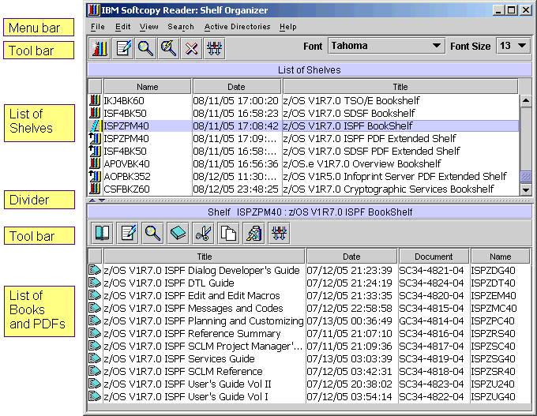

IBM Softcopy Reader
Shelf Organizer

List of Shelves
The List of Shelves (upper window) lists all of the shelves
on your system that:
- You specified during the IBM Softcopy Reader installation
- You added to the User Defined Directories for Books, Shelves
and Shelf indexes since installation
Single-click on a shelf in this list to see the books it contains.
The list of books will be displayed in the Shelf (lower window).
The functions available for working with shelves are explained
in the Toolbar and Menu sections below.
List of Books
When a shelf is selected, all books contained in that shelf are
displayed in the Shelf (lower window) of Shelf Organizer.
Double-click on a book in the list to open it in the Softcopy Reader.
Books can be cut, copied, and pasted amongst shelves from the Shelf
Organizer. Other functions for working with books are explained in the
sections below. |
Changing How Shelves and Publications are Displayed
You can sort the list of shelves or list of publications by
clicking one of the column headings. For example, click the Date
heading in the List of Shelves to sort the shelves in date order.
Clicking the same heading a second time reverses the order.
You can change the order of the columns by dragging
the column heading to the left or right. For example, to display the
Title before the Date, click and hold the mouse button while the
pointer is over the Title heading. Still while holding down the mouse
button, move the mouse to the left until the Title column is displayed
before the Date column.
You can drag the horizontal divider up and down to adjust the
relative size of the List of Shelves and List of Publications.
Using the List of Shelves Toolbar
|
Create Shelf
Opens the Create Shelf
window where you can enter the name and description of the new shelf,
select books, and create a shelf.
Also available from the menu:
File » Create Shelf |
|
Shelf Description
Displays information about the selected shelf.
Also available from the menu:
File » Shelf Description |
 |
Search Shelves
Opens the Search Shelves
Window to allow searching through all books on the selected shelves.
Also available from the menu:
Search » Shelves |
|
Search Indexed Shelves (Quick Search)
Opens the Search
Indexed Shelves window to allow searching through all
books on the selected shelves using the associated shelf indexes,
if one exists.
Also available from the menu:
Search » Indexed Shelves |
|
Delete Shelves
Deletes the selected shelves from the list. Books
belonging to the shelves are not deleted -- only the shelf files.
Also available from the menu:
File » Delete Shelves |
|
Filter Shelf List
Allows you to open and close the filter criteria
field for filtering the list of shelves. Entering filter criteria in
these fields will mask the shelves displayed in the list. Filtering
criteria are discussed in the Using Filters section below.
Also available from the menu:
View » Filter » Shelves |
Using the List of Books Toolbar
|
Open Book
Opens the selected book in the Book Reader.
Also available from the menu:
File » Open Book |
|
Book Description
Displays additional information about the selected book. |
|
Search Selected Books
Opens the Search Selected Books
window to allow searching through the selected books on the shelf.
Also available from the menu:
Search » Selected Books |
|
Import Book
Allows you to import books from any location and
include them in the selected shelf. This is regardless of whether
the new location path exists in the user defined configuration.
Also available from the menu:
Edit » Import Book |
|
Cut Selected Books
Cuts the selected books from the current shelf.
These books may be pasted into other shelves.
Also available from the menu:
Edit » Cut Books |
|
Copy Selected Books
Copies the selected books from the current shelf.
These books may be pasted into other shelves.
Also available from the menu:
Edit » Copy Books |
|
Paste Books
Pastes the last cut or copied books into the
currently selected shelf.
Also available from the menu:
Edit » Paste Books |
|
Filter Book List
Allows you to open and close the filter criteria
field for filtering the list of books. Entering filter criteria in
these fields will mask the books displayed in the list. Filtering
criteria are discussed in the Using Filters section below.
Also available from the menu:
View » Filter » Books |
Using Filters
| The shelf list or book list may be filtered by
clicking on the button
which opens the filter windows for selecting and entering filter
criteria. Select the column to filter from the drop-down list
(Name, Date, Description or Document Number for books)
and enter a regular expression in the adjacent field for masking
the entries in the table, then press Enter.
Valid expression operators are: |
| * |
Multiple-character Wildcard
Matches any number of any character.
Example: *book* matches books, notebook, etc. |
| ? |
Single-character Wildcard
Matches any character in the specified location.
Example: she?? matches shelf, shell, sheep, etc. |
| ! |
NOT
Excludes entries matching the criteria. This operator
may be placed only at the beginning of the regular expression.
Example: !*book* matches all except books, notebook, etc. |
Using the font selector fields
| Font and Font Size |
Use these fields to select the font for displaying
text in the List of Shelves and List of Publications. Click the
drop-down boxes to select from the list of available fonts and sizes. |
Using the Menus
In addition to the functions that appear on the toolbar, there
are several additional features that are available through the menus.
These are: |
File
| Create Shelf |
Opens the Create
Shelf window where you can enter the name and description
of the new shelf, select books, and create a shelf. |
| Shelf Description |
Displays information about the selected shelf. |
| Delete Shelves |
Deletes the selected shelves from the
list. Books belonging to the shelves are not deleted -- only the shelf
files. |
| Open Publication |
Allows you to open a book in Book Reader.
You can select which book to open from the books and shelves directories
that were defined when Book Reader was installed and any that were
added since installation. |
| Close |
Closes the Shelf Organizer. |
Edit
| Import Publication |
Allows you to import books from any
location and include them in the selected shelf. This is regardless of
whether the new location path exists in the user defined configuration. |
| Cut Publications |
Cuts the selected books from the current shelf.
These books may be pasted into other shelves. |
| Copy Publications |
Copies the selected books from the current
shelf. These books may be pasted into other shelves. |
| Paste Publications |
Pastes the last cut or copied books into the
currently selected shelf. |
| User Defined Directories |
Opens the Startup Folders for Books and
Shelves window |
View
| Sort Shelves |
Sorts the list of shelves by the selected column.
Name, Date, Description |
| Sort Publications |
Sorts the list of books by the selected column.
Name, Date, Description, Document No |
| Filter |
Opens the filter windows for selecting and entering
filter criteria for books or shelves. |
| Refresh |
Allows you to swap CD-ROMs in a CD-ROM drive and refresh
the directories, books, and shelves displayed on the Shelf Organizer
with those of the CD-ROM currently in the drive. |
Search
| Shelves |
Opens the Search
Shelf Window to allow searching through all books on the shelf. |
| Indexed Shelves (Quick Search) |
Opens the Search
Indexed Shelf Window
to allow seaching through all indexed books on the shelf. |
| Selected Books |
Opens the Search
Selected Books Window to allow searching through all the booksselected |
Active Directories
| Edit User Defined Directories |
Opens the Startup Folders for Books and
Shelves window, same as User Defined Directories under Edit. |
| Change Active Directories |
It will open interface for users to deactivate one
or more of the User Defined Directories, it use to be done by removing
the unwanted directories. |
| Perform Auto Refresh |
Check box to set option on refreshing
CD/DVD disc changes. |
Help
| Getting Started |
Displays this help screen. |
| User's Guide |
Opens the IBM Softcopy Reader User's Guide |
| About Shelf Organizer |
Displays information about Softcopy Reader,
including the current version, service level, and driver level. |
IBM® is a registered trademark of
International Business Machines Corporation.